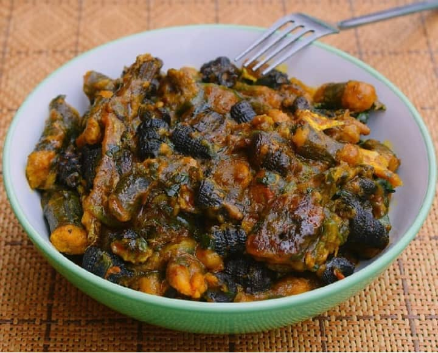
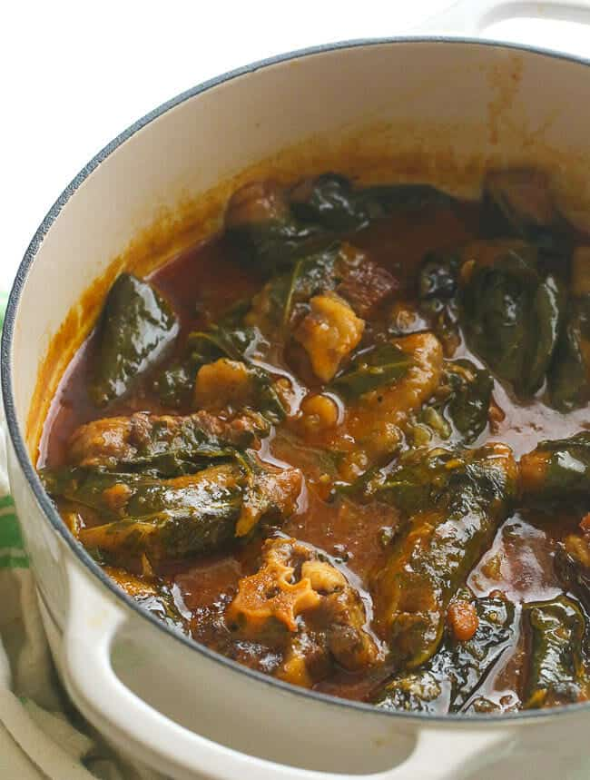
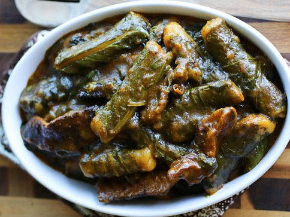
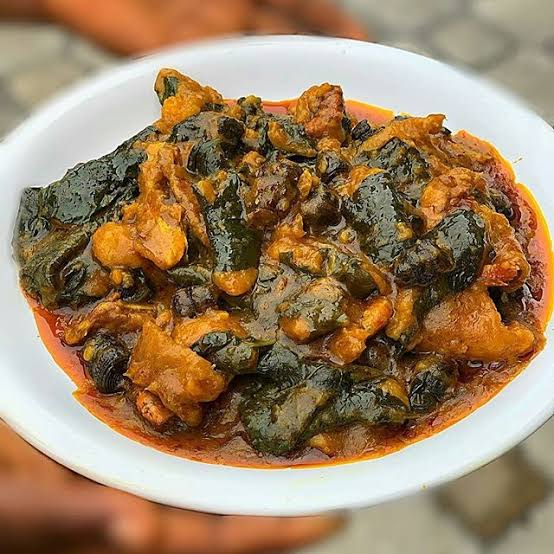

Ekpang Nkukwo
ekpang nkukwo is a traditional Nigerian and dish native to the Efiks and Ibibios. It is also widely enjoyed in Cameroon and very popular with the Bakweri tribe in
It is made of freshly grated cocoyam, then wrapped in leafy greens and slowly simmered with various types of fresh or smoked meat, fish, crayfish, red oil and other spices depending on the cooks preference until cooked to perfection.
| S/N | Ingredient | Measurement |
|---|---|---|
| 1 | cocoyam | 1 pound |
| 2 | cocoyam leaf(nkukwo) | 4-5 bunch |
| 3 | boiled beef | 1/2 pound |
| 4 | Dried fish | 1-2 cups |
| 5 | ground crayfish | 1/2 cup |
| 6 | chopped onions | 1/2 medium |
| 7 | palm oil | 1-2 cups |
| 8 | seasoning cubes | 1 teaspoon |
| 9 | white pepper | 1 teaspoon |
| 10 | salt and pepper | according to preference |
| 11 | periwinkle | generous amount |
Instructions
- Cut the beef in bite size chunks, season with salt, Maggi, and onions and cook until tender. make sure you have at least 2 to 3 cups of stock from the beef. to use in cooking this dish.
- Peel Coco yam with a sharp knife, peeling away from your body carefully draw the paring knife down the body of the yam, being careful not to remove too much of the yam in during the process.
- Cut into large chunks and wash immediately to prevent discoloration and leave them in cool water until ready to use.
- Pulse the cocoyam in a food processor with until puree or use a grater to grate the cocoyam. Lightly salt and set aside.
- Wash leaves and tear them into medium pieces, making sure there are no tears or holes in the leaves.
- Oil a large pot with about ½ cup of palm oil. Set aside.
- Scoop a tablespoon or so of grated cocoyam mixture onto a leaf and wrap tightly (to form the shape of fingers) making sure the cocoyam is not sticking out.
- Arrange wrapped cocoyam fingers in the oil pot in a circle leaving a hole in the middle. Repeat until cocoyam mixture has been completely used up.
- In a separate pot bring about 7 cups of water to a boil.
- Add chopped onions, crayfish, periwinkle, fish, meat, salt, pepper, bouillon cubes, palm oil, and country onions to the pot.
- Let it simmer for about 10 minutes, there should be no stirring at this point until most of the ekwang firms up- add about 1/2 cup of beef stock to prevent any burns.
- Then after ekwang firms up add about all the beef stock if you have any with about 3 cups water or just use 4-6 cups of hot water or more to the pot and let it cook on medium heat for about an hour until fully cooked. You may add more water to prevent burns.
- Stirring should be kept at a minimum- to prevent the ekwang from becoming mushy.
- Adjust for ekpang consistency with water, salt and pepper.



